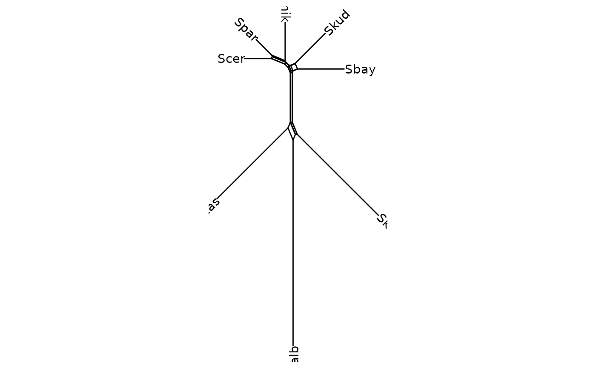

drawing phylogenetic tree from phylo object
ggsplitnet(tr, mapping = NULL, layout = "slanted", open.angle = 0, mrsd = NULL, as.Date = FALSE, yscale = "none", yscale_mapping = NULL, ladderize = FALSE, right = FALSE, branch.length = "branch.length", ndigits = NULL, ...)
| tr | phylo object |
|---|---|
| mapping | aes mapping |
| layout | one of 'rectangular', 'slanted', 'fan', 'circular', 'radial', 'equal_angle' or 'daylight' |
| open.angle | open angle, only for 'fan' layout |
| mrsd | most recent sampling date |
| as.Date | logical whether using Date class in time tree |
| yscale | y scale |
| yscale_mapping | yscale mapping for category variable |
| ladderize | logical |
| right | logical |
| branch.length | variable for scaling branch, if 'none' draw cladogram |
| ndigits | number of digits to round numerical annotation variable |
| ... | additional parameter |
tree
Schliep, K., Potts, A. J., Morrison, D. A. and Grimm, G. W. (2017), Intertwining phylogenetic trees and networks. Methods Ecol Evol. 8, 1212--1220. doi:10.1111/2041-210X.12760
Klaus Schliep
data(yeast, package='phangorn') dm <- phangorn::dist.ml(yeast) nnet <- phangorn::neighborNet(dm) ggsplitnet(nnet) + geom_tiplab2()